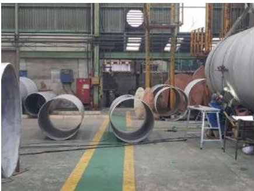
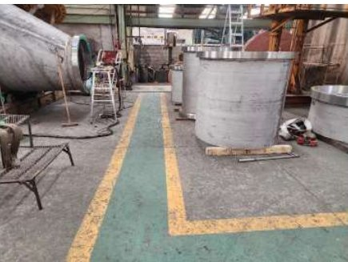
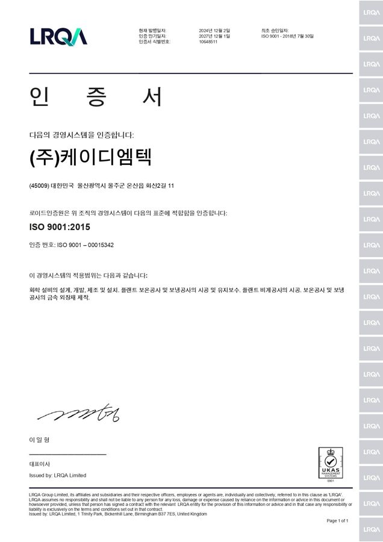
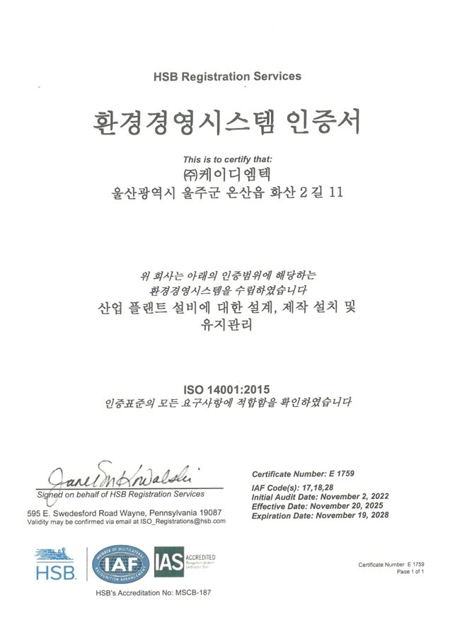
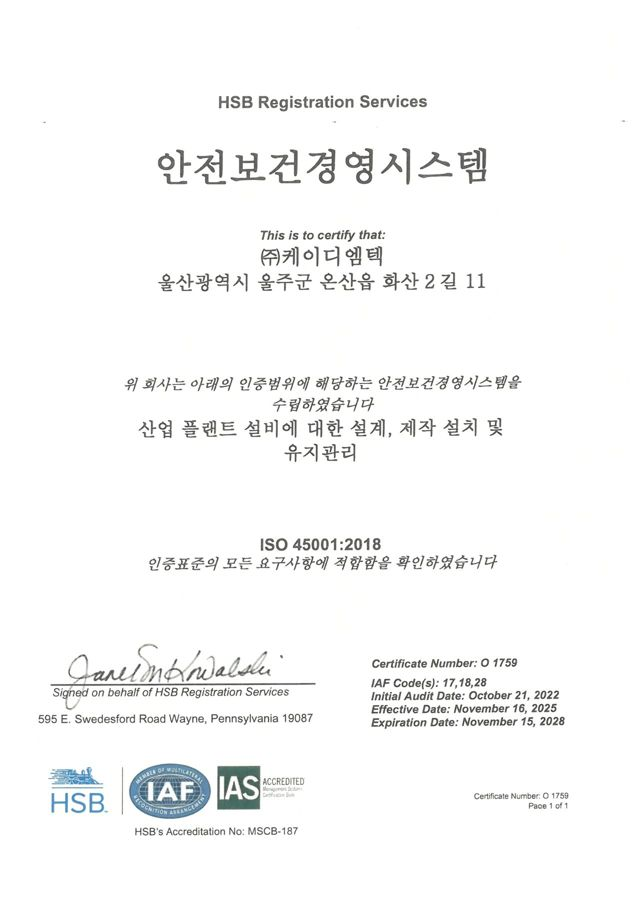

ESG MANAGEMENT
주요 ESG 활동 및 성과
KDMTECH는 우수한 기술 역량과 전문화된 인력, 체계화된 기업시스템을 바탕으로 ESG경영을 실천하여 더 나은 미래를 향해 나아가고 있습니다.
환경보호, 안전보건경영, 윤리경영 등의 ESG경영을 적극적으로 실천하여 더 나은 미래를 향한 도전으로 기업의 가치를 극대화하고, 고객과 함께 성장하는 기업이 되도록 노력하겠습니다.
출처: 현재 홈페이지 ESG 보고서 「2022-2023년 주요 ESG 활동 및 성과」 · GS칼텍스·SK이노베이션 선정 이력은 2026 PQ
E · ENVIRONMENT
환경경영
환경경영시스템(ISO 14001) 인증
탄소중립 및 환경보전을 위하여 2022년 환경경영체제에 대한 국제 표준인 ISO 14001을 인증받았습니다. 환경경영을 기업 경영의 방침으로 삼고 지속적으로 개선하고자 노력하고 있습니다.
임직원 대상 환경교육
임직원의 환경의식 고취를 위하여 환경교육을 정기적으로 실시하고 있습니다. 2023년 11월에는 임직원 45명을 대상으로 탄소중립 생활 실천 방법에 관한 교육을 실시하였습니다.
대기 측정 및 관리
사업장에서 배출되는 대기오염 물질을 모니터링하기 위하여 정기적으로 대기측정 및 분석을 전문 기관에 의뢰하고, 배출허용기준 적합 여부를 확인하고 있습니다. 2022년에는 총 24회를 의뢰하였고, 배출허용기준에 적합하지 않다는 의견은 없었습니다.
에너지 사용량 관리
본사 및 사업장에서 사용하는 전기, 수도 등의 에너지 사용량과 폐기물 배출량을 모니터링 및 관리하고 있습니다.
출처: 현재 홈페이지 ESG 보고서 「2022-2023년 주요 ESG 활동 및 성과」S · SAFETY & HEALTH
안전보건경영
안전보건 관리체계 구축
전문화된 인력과 함께 안전보건 관리체계를 구축하여 운영하고 있습니다. 안전보건총괄책임자, 보건관리자, 관리감독자 등으로 구성된 안전보건 관리 조직이 안전보건 업무를 전담하여 수행하며, 안전보건경영 매뉴얼을 바탕으로 관련 규정의 제·개정, 위험성 평가 등을 진행합니다.
2021년 안전보건경영시스템 국제표준 ISO 45001 인증을 획득하였으며, 2020년부터 3년 연속 BASF의 안전보건환경(EHS) 관리 우수 협력업체로 선정되어 표창을 받았습니다.
안전환경부안전보건관리책임자
생산본부장보건관리자
동강병원
생산부관리감독자
생산부관리감독자
생산부
안전보건 관리 조직
SHE 안전보건 경영방침
- 안전보건환경을 회사경영의 기본요소임을 인식하여 최우선의 과제로 삼는다.
- 전 직원은 적극적인 참여와 협력을 바탕으로 안전보건환경경영체제를 정착시킨다.
- 안전보건환경 관련 국내외 법규 및 이해관계자의 요구사항을 적극 수용하고 개선조치한다.
- 안전보건환경활동이 주요 위험과 영향이 허용 가능한 수준이 되도록 기술과 재정을 지원한다.
- 전 직원 및 협력사의 노력으로 효율적인 시스템이 발전되도록 교육훈련을 실시한다.
안전보건 경영목표 및 계획
현장 및 사무실의 안전관리 시스템이 유지되도록 선진적인 안전경영 체계 기반을 구축하고, 중점 추진 과제의 효과적인 정착 및 무재해 확산을 위해 전사적으로 ‘KDMTECH 5S 혁신활동’을 추진하고 있습니다. 5S 혁신활동 보기 →
안전보건 교육
매년 임직원을 대상으로 안전보건 교육을 진행하고 있습니다. 2023년 8월에는 교육대상 38명(장기파견 6명 제외) 중 38명이 ‘끼임 사고 예방’을 주제로 교육에 참여하였으며, 대표이사도 안전보건관리 책임자로서 대한안전문화협회의 안전보건교육을 이수하였습니다.
산업재해 예방
사고 없는 일터를 위해 2023년에는 매월 4일 본사 및 사업부별 안전점검을 실시하고, 안전사고 위험이 있는 현장에 대해 즉각 조치하였습니다.


2023.7.23 안전점검
비상대응 프로세스
본사 및 현장에서 발생할 수 있는 안전보건·환경 비상사태에 신속히 대처해 사고피해와 환경영향을 최소화하고자 비상대응 프로세스를 제정하였고, 2022년 ISO 45001·ISO 14001 도입에 따라 아래와 같이 개정하였습니다. 풍수해, 폐수배출시설, 유기용제 누출, 전기화재, 정전, 일반화재 등을 상정하고 상황별 행동요령과 연락망을 두고 있습니다.
QUALITY & PRIVACY
품질경영 및 정보보호
품질 관리 시스템
‘NO Standard, NO Work!’를 모토로 품질관리 MAP을 수립하여 관리하고 있습니다. 기본과 원칙을 준수하고, 작업 표준화 및 통계화를 통해 품질을 관리하며, 초기 설계검토부터 시공까지 발주자가 요구하는 품질을 달성하기 위해 품질보증제도를 시행하고 있습니다. 품질관리 보기 →
품질경영시스템(ISO 9001) 인증
2021년 국제 규격인 ISO 9001을 인증받았습니다. 또한 같은 해 미국기계학회(ASME)의 발전용 보일러 현장 제작 및 설치(S), 압력용기 현장 제작(U), 압력용기 대체 규칙(U2)을 각각 인증받아 객관적인 신뢰도 제고에 기여하고 있습니다. 연혁(ISO 9001 2004·ASME 2006/2015)과 연도 확인
정보보호 교육 실시
2019년 제정된 정보보호 내부관리계획에 따라 개인정보 취급자 대상 정보보호 교육을 정기적으로 실시하고 있습니다. 2023년 10월에는 교육대상 57명 중 57명이 ‘개인정보의 정의 및 보호법 개정 현황’ 교육을 이수하였습니다.



G · ETHICS & HUMAN RIGHTS
인권 및 윤리경영
윤리경영 강화
윤리헌장과 윤리강령을 제정하고 이에 기반한 윤리경영을 실천하고 있습니다. 임직원으로서 지켜야 할 윤리와 함께 주주, 고객 등 이해관계자를 향한 존중 및 보호를 원칙으로 두고 있으며, 임직원은 윤리서약서에 서명하여 윤리경영 실천에 동참하고 있습니다.
내부 신고 제도 운영
깨끗한 조직문화 정착을 위해 내부 신고 제도를 운영합니다. 다른 임직원의 부패행위를 알았거나 강요·제의를 받은 경우의 신고 및 처리절차를 두어 비윤리적 행위를 예방하고 있습니다.
노사협의회 운영
근로자의 결사 및 단체교섭권을 존중하여 근로자참여법에 근거한 노사협의회를 운영합니다. 2023년 2/4분기에는 정기건강검진, 폭염대비 주의사항, 국민연금 변경사항, 부서별 복지 체크카드 발급 등을 안건으로 진행하였습니다.
㈜케이디엠텍 윤리헌장
우리는 기업의 사회적 책임을 소중히 여기고, 고객의 가치와 신뢰를 얻기 위해 비즈니스 활동에서 공정한 기준에 따라 행동하며 이러한 기준에서 벗어나는 어떠한 결과도 수용하지 않음을 선언한다.
우리가 지키는 높은 윤리수준은 명문화된 규정보다 임직원 각자의 자발적 참여로 구축되는 건전한 기업문화로 자연스럽게 달성되며 아름다운 전통으로 계승한다.
- 우리는 높은 윤리의식과 밝고 고운 심성을 바탕으로 정직하고 공정하게 직무를 수행한다.
- 우리는 최고의 솔루션과 서비스로 고객의 소중한 가치를 항상 최우선으로 생각한다.
- 우리는 효율적인 경영으로 이익을 실현함으로써 주주가치를 존중한다.
- 협력사와의 거래는 호혜의 원칙에 따라 상호 발전할 수 있도록 힘쓰며 투명하고 공정하게 한다.
- 우리는 국가와 지역사회의 각종 법규를 준수하며 자발적인 사회봉사로 지역사회 발전에 기여한다.
- 우리는 프로페셔널로서의 자긍심을 갖고 끊임없는 자기계발 노력으로 최고의 전문가가 된다.
- 우리는 명예와 품위를 지키며 일체의 부정행위를 하지 않으며 업무 수행 시 회사 이익을 우선한다.
인권 및 윤리 교육 실시
임직원의 윤리 및 인권의식 함양을 위해 인권·윤리 교육을 실시하고 있습니다.
| 구분 | 교육명 | 교육일 |
|---|---|---|
| 인권 | 직장 내 성희롱 예방 및 대응 매뉴얼 | 2023.10.26 |
| 인권 | 직장 내 괴롭힘 판단 및 예방/대응 가이드 | 2023.09.22 |
| 윤리 | 퇴직연금 가입자 교육 | 2023.11.15 |
| 인권 | 직장 내 장애인 인식개선 교육 | 2023.09.18 |
프로젝트를 상담하세요.
설계부터 제작·시공, AX까지 한 번에 검토해 드립니다.